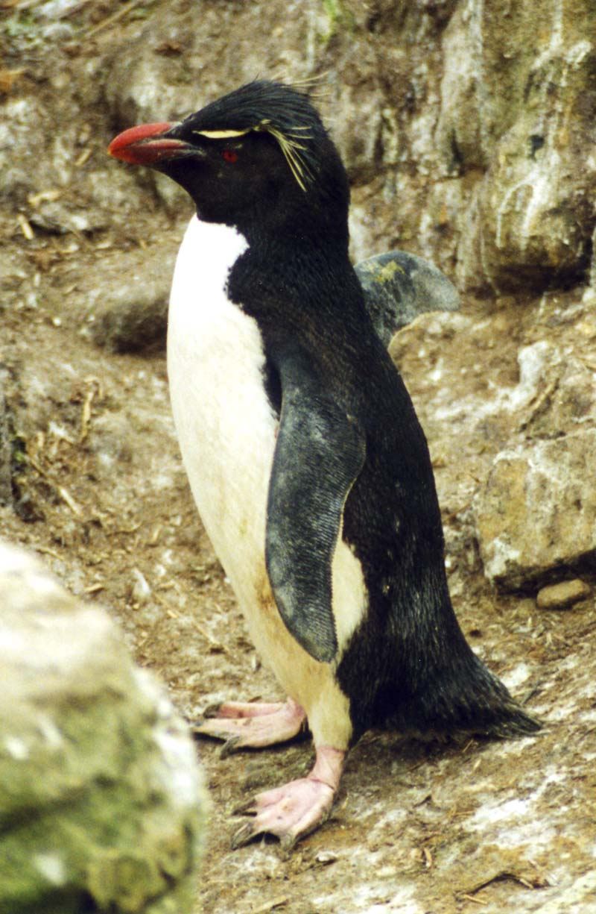

Jsou to poměrně malí tučňáci, měří asi 55 cm a váží okolo 2,5 kg. Shora mají barvu modro černou, zespodu bílou. Po stranách čela mají zlatavou chocholku z dlouhých pírek, které jim po stranách spadají za oči. Uprostřed čela je černá vztyčená chocholka. Zobák mají mohutný, červenohnědé barvy. Jsou ze všech tučňáků nejagresivnější, bojují o místo a chrání svá vejce v hnízdě na přeplněném hnízdišti před konkurenty. Snaží se soupeřovou hlavu zachytit pod křídlo a vyvrátit ho, bojují spolu také silnými zobáky. Průměrná délka života je 10 let. Stravou je téměř převážně kril doplňovaný drobnými hlavonožci a korýši. Hlasový rejstřík mají široký, používají ho často při komunikaci se samici, mláďaty i okolím. Mají i množství speciálních postojů vyjadřující momentální duševní stav, od dvoření se samicí, před výhrůžku soupeřům až po podřízený postoj s přitaženým peřím k tělu, nahrbením a hlavou výrazně nataženou dopředu. V takovém postoji, podřízeném, procházejí přehuštěným hnízdištěm, kdykoliv jdou krmit mláďata
